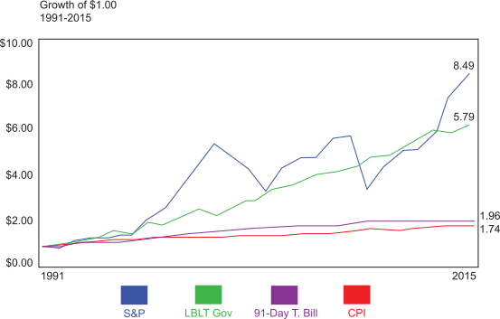

To evaluate the return potential for the most often used investment vehicles, let's look at the total rate of return produced by stocks, bonds, and money market instruments over the last 25 years. Again, total return is the sum of growth and yield for a given investment.
The chart compares each investment vehicle with the rate of inflation that occurred during the same period.
As the chart and numbers illustrate, stocks substantially outperformed bonds during this period, bonds outperformed T-Bills or money market instruments, and all three of these instruments outpaced the rate of inflation.
Click each graph label to learn more.
